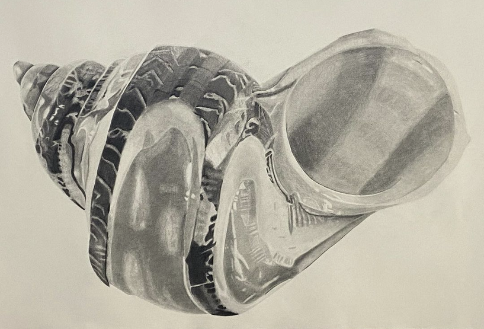
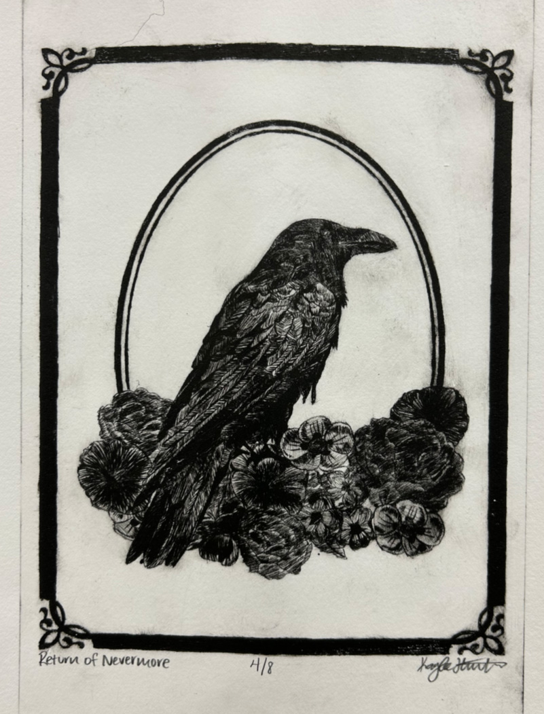

Welcome
Hello! My name is Kaylee Hinton, I'm a current Graphic Design major at Concordia University, Nebraska. I'm currently a junior with minors in Marketing and Computer Science. This portfolio showcases different artworks varying from current and previous years of college. Take a look, and if you have any questions or want to reach out, head over to my instagram page. Have a great day!
Follow my Art Instagram page:kh_college_art
A Few Favorites
|  | SeashellThis seashell is a representation of myself when I left home for college. I had felt like a defeated version of myself desperately needing a place to grow and learn how to be an adult without the supervision of my parents. While the seashell has permanently carved edges that will never regrow, I believe that the shine within leads to growth and learning to be better for myself and for others. |

|
Hidden FiguresThis movie poster pulls references from the movie such as the multiple important chalk board scenes, the method used to accurately determine correct launch numbers, and the rocket launching into space. The magnifying glass is used to portray the accurate findings with the method that successfully helped launch the rocket into space. It combines these icons into one movie poster with a light sage background reminiscent of a chalk board. |
|  | Return of NevermoreReturn of Nevermore is about the return of the feeling of despair from another loss. It utilizes a raven to reference a memento mori and Edgar Allen Poe's The Raven. It is to represent how people recieve more flower when they are not longer alive than when they were alive. Bring the reminder of death, guilt, and despair back to the viewer. |